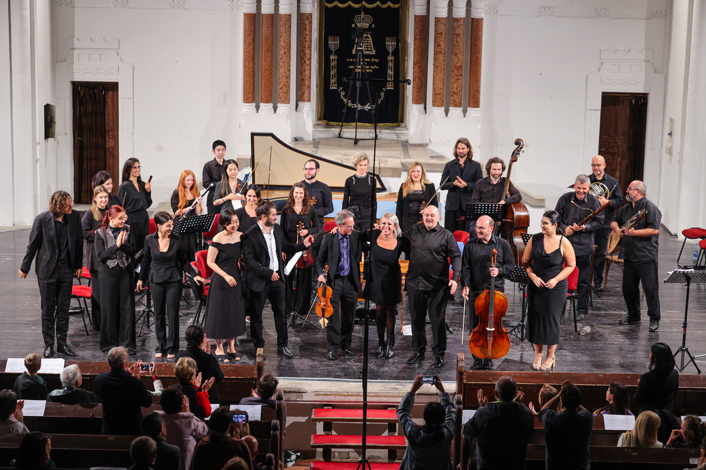
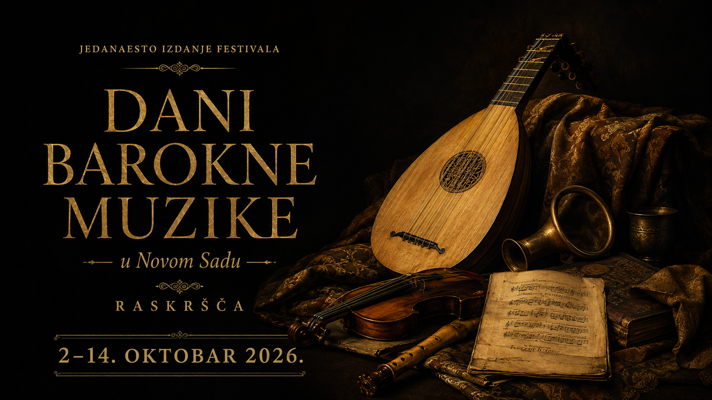
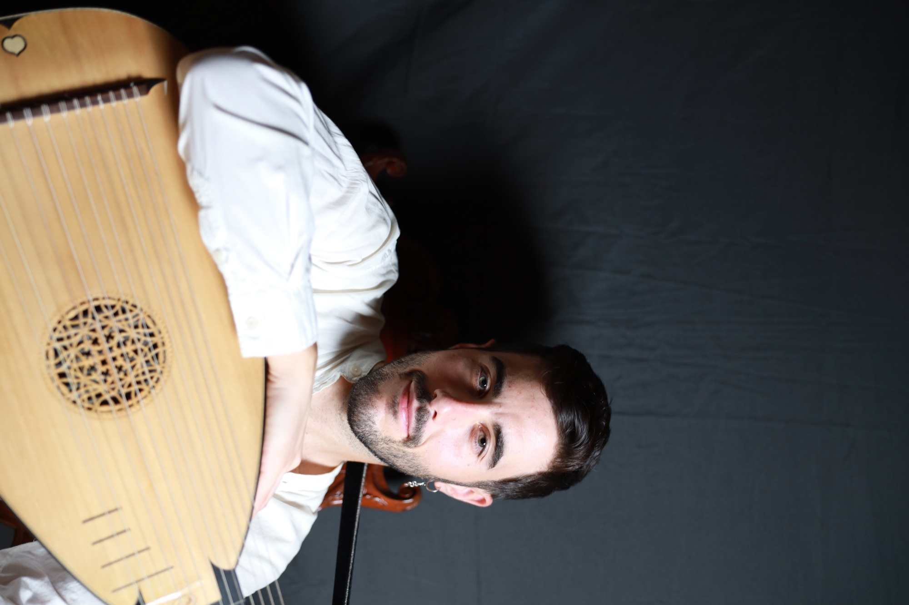

2. oktobar 2026.
Ulaznice u prodajiNew Trinity Baroque & Beogradska barokna akademija
G. F. Händel: Ariodante
Koncertna verzijaConcert version
Jedanaesto izdanje festivala Eleventh festival edition
u Novom Sadu in Novi Sad
Jedanaesto izdanje Dana barokne muzike u Novom Sadu održava se od 2. do 14. oktobra 2026. godine i okuplja umetnike iz Srbije, Hrvatske i Španije kroz koncerte, radionicu za decu i Novosadsku baroknu akademiju.
The eleventh edition of Days of Baroque Music in Novi Sad takes place from 2 to 14 October 2026 and brings together artists from Serbia, Croatia, and Spain through concerts, a children’s workshop, and the Novi Sad Baroque Academy.

Program na prvi pogledProgramme at a glance
Od velikih scenskih dela do intimnih koncerata, radionica za decu i Novosadske barokne akademije.
From major staged works to intimate concerts, children’s workshops, and the Novi Sad Baroque Academy.

2. oktobar 2026.
Ulaznice u prodajiG. F. Händel: Ariodante
Koncertna verzijaConcert version

3. oktobar 2026.
Ulaznice u prodajiHrvatska
Canticum Canticorum

7. oktobar 2026.
Ulaznice u prodajiŠpanija
Muzika iz vremena ServantesaMusic from the Time of Cervantes


11. oktobar 2026.
Ulaznice u prodajiAffetti d’amore

12–14. oktobar 2026.
Prijave / više informacijaMeila Tomé • Radoslava Vorgić • Rafael Arjona Ruz • Bojana Dimković
Stalne stranicePermanent sections
Dani barokne muzike u Novom Sadu predstavljaju ranu muziku kroz koncerte, edukaciju i međunarodnu saradnju. Saznajte više o istoriji festivala, organizatoru VEMA i umetničkom konceptu.Mission, history, organizer VEMA, and the long-term development of the early music scene in Novi Sad.
Otvori stranicuOpen pageProgram namenjen studentima, mladim profesionalcima i izvođačima zainteresovanim za istorijski obaveštenu interpretaciju. Pogledajte predavače, termine i informacije o prijavi.Faculty, structure, and information for students, young professionals, and teachers.
Otvori stranicuOpen pageRadionice koje deci približavaju ranu muziku kroz slušanje, igru, priču i upoznavanje sa istorijskim instrumentima.Programmes that bring early music closer to young audiences through listening, play, and workshops.
Otvori stranicuOpen pageArhivaArchive
Istorijski sadržaj je izdvojen iz početne stranice i organizovan u preglednu arhivu, kako bi izdanje 2026 bilo u fokusu, a raniji programi i galerije ostali lako dostupni.
Historical material has been moved out of the homepage and organized into a clear archive so that the 2026 edition stays in focus while earlier programmes and galleries remain easy to access.
Kompletan pregled desetog izdanja sa sedam koncerata i foto-galerijom.A complete overview of the tenth edition with seven concerts and a photo gallery.
Otvori arhivuOpen archiveSažetak repertoarskih celina i umetničkih naglasaka izdanja 2024.A summary of the repertory strands and artistic focus of the 2024 edition.
Otvori arhivuOpen archiveStruktura arhive je pripremljena i može se dopunjavati dodatnim godinama, posterima, programima i medijskim materijalima.The archive structure is prepared and can be expanded with more years, posters, programmes, and media materials.
Pregled svih godinaView all yearsPartneri i podrškaPartners and support
Podrška međunarodnoj saradnji i predstavljanju španske muzičke kulture.
Podrška međunarodnoj mobilnosti umetnika i kulturnoj razmeni.
Evropska mreža i oznaka kvaliteta za umetničke festivale.
Regionalna saradnja i povezivanje scene rane muzike.
Partnerstvo i podrška festivalskim programima u Novom Sadu.